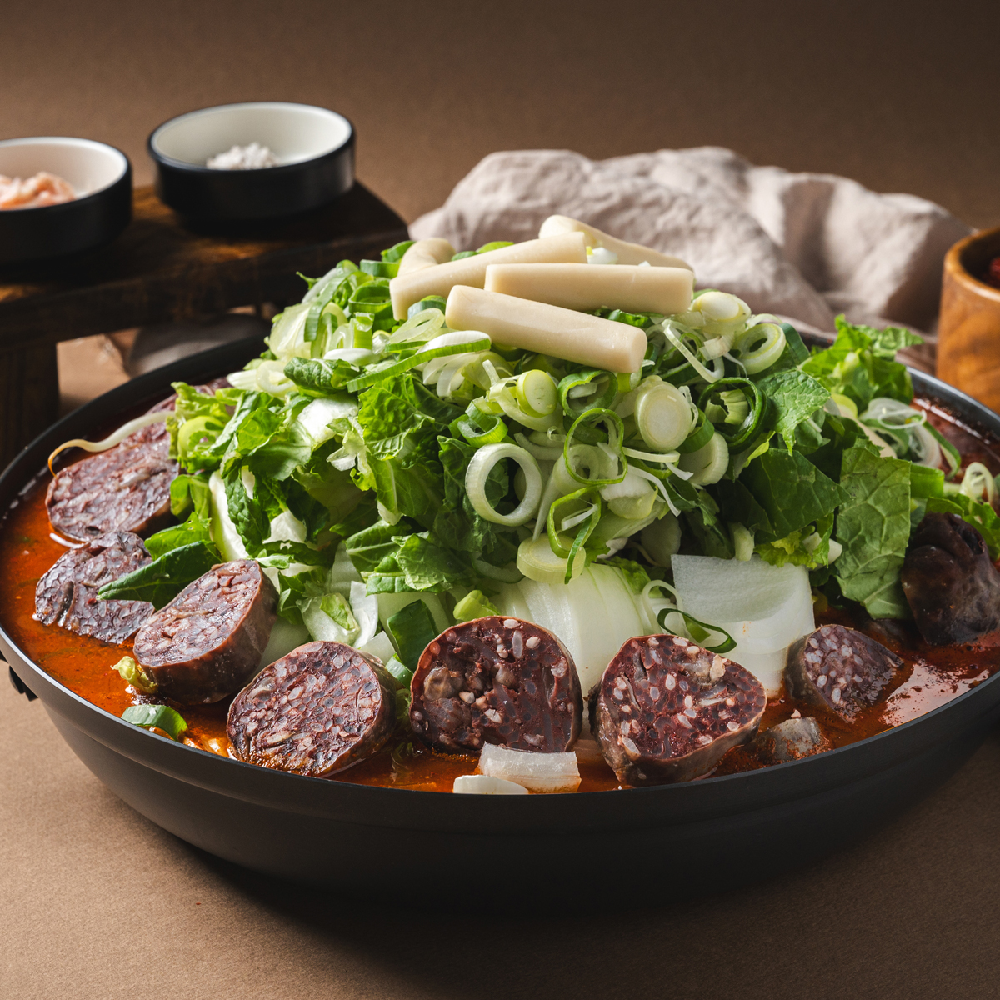

GAMCHO RESTAURANT
제주의 깊은 맛을 담은
따뜻한 한 그릇
1994년부터 이어온 감초식당 신제주점.
오랜 시간 변하지 않은 정성과 제주 로컬의 깊은 맛을 전합니다.

OUR STORY
30년 넘게 지켜온
감초식당의 마음
화려함보다 오래 기억에 남는 따뜻한 맛.
감초식당은 오랜 시간 한결같은 방식으로
한 그릇의 정성을 준비하고 있습니다.
MEDIA
방송과 미디어가 주목한 맛
tvN 놀라운토요일, 안녕하세요 거인인데요 등 다양한 콘텐츠에서 소개되었습니다.
TV 방송 출연
놀라운토요일 등 다양한 방송 프로그램 소개
유튜브 콘텐츠
제주 로컬 맛집 콘텐츠 다수 출연
제주 로컬 맛집
제주공항 근처 오래된 로컬 맛집
REVIEWS
많은 분들이 기억하는 맛
★★★★★
제주 여행 마지막날 먹었던 국밥인데 아직도 기억나요.
국물이 정말 깊고 따뜻했어요.
네이버 리뷰
★★★★★
현지인 느낌 제대로 나는 맛집.
제주 오면 꼭 다시 들르고 싶은 곳이에요.
방문 고객 후기
★★★★★
순대국밥이 정말 깔끔하고 맛있어요.
늦은 시간까지 운영해서 더 좋았습니다.
Google Review
JEJU MOOD
감초식당의 분위기


제주의 깊은 맛을 경험해보세요
오랜 시간 변하지 않은 감초식당의 따뜻한 한 그릇을 만나보세요.